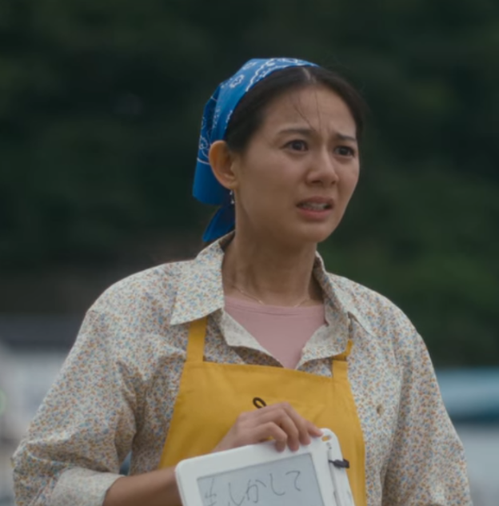
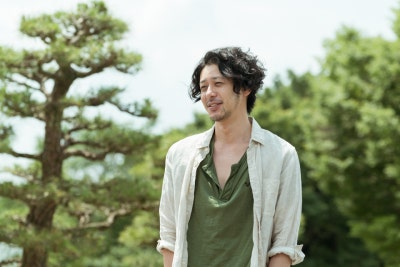
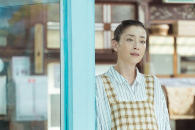
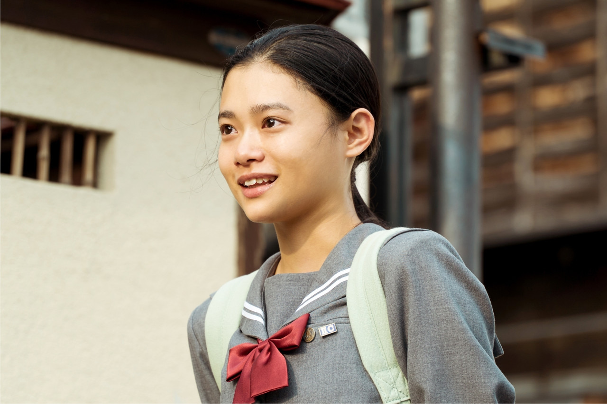
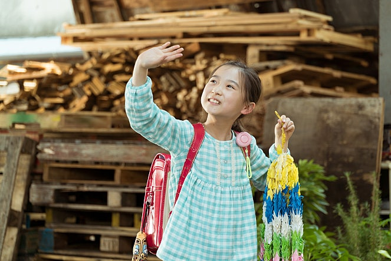
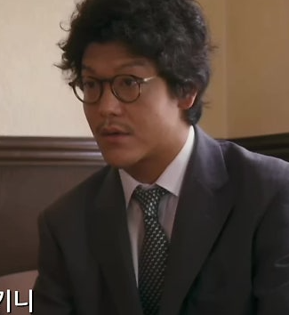

등장인물 및 관계도
인물을 클릭하면 하단에서 상세 설명을 확인하실 수 있습니다.

사카마키 기미에
아즈미의 생모

사치노 카즈히로
철없는 아빠

사치노 후타바
강철멘탈 엄마
외도 여성

사치노 아즈미
큰딸

카타세 아유코
작은딸
행복 목욕탕이 품은 또 다른 인연들

무카이 타쿠미
우연히 만난 청년

타키모토
단골 탐정
사치노 후타바
세상에 둘도 없을 강철멘탈 대인배 엄마사치노 후타바는 가족을 위해 자신의 모든 것을 아낌없이 내어주는 강인한 어머니입니다. 어린 시절 친엄마에게 버림받았음에도 세상을 원망하기보다 늘 그리움을 품고 살아왔는데요. 그러던 어느 날, 췌장암 말기로 남은 시간이 단 2개월뿐이라는 시한부 선고를 받게 됩니다. 하지만 그녀는 절망 속에 주저앉는 대신, 자신이 떠난 뒤에도 남겨진 가족들이 스스로 일어설 수 있도록 세상에서 가장 혹독하고도 따뜻한 자립 훈련을 시작합니다. 가출했던 남편을 찾아 목욕탕 영업을 재개하고, 서로 다른 상처를 가진 가족들을 하나로 품어내는 후타바의 마지막 여정은 우리에게 진정한 사랑과 가족의 의미를 되묻게 합니다.
"도망치면 안 돼. 할 수 있어. 너라면 할 수 있어. 할 수 있고. 엄마의 딸이잖아."
"죽기 싫어. 더 살고 싶어..."
사카마키 기미에
아즈미의 생모사카마키 기미에는 남편 카즈히로의 전처이자, 큰딸 아즈미를 낳은 친어머니입니다. 청각 장애가 있어 수화로 소통하는 그녀는 현재 해변가의 한 거미게 식당에서 조용히 일하며 살아가고 있는데요. 오랫동안 딸을 그리워하면서도 지난날의 죄책감 때문에 차마 먼저 다가가지 못했지만, 후타바의 끈질기고도 진심 어린 설득 덕분에 마침내 아즈미와 감격적인 재회를 하게 됩니다. 이 만남을 계기로 오해를 풀고 서로의 진심을 확인하면서, 서툴지만 애틋한 모녀의 정을 조금씩 회복해 나가는 인물입니다.
(수화로) "네가 아즈미니?"
사치노 카즈히로
철없는 아빠사치노 카즈히로는 1년 전 갑자기 집을 나가 파친코를 전전하던 철없는 남편입니다. 아내 후타바에게 이끌려 외도로 얻은 어린 딸 아유코와 함께 집으로 돌아온 뒤, 잊고 지냈던 가족의 소중함을 서서히 깨닫게 되는데요. 평소 단순하고 우유부단한 성격 탓에 크고 작은 사고를 치기도 하지만, 아내의 헌신과 그녀가 남긴 마지막 진심을 마주한 뒤로는 든든한 가장으로 변모하게 됩니다. 가업인 '사치노유'를 굳건히 지키며 남겨진 가족들의 든든한 버팀목이 되겠다고 눈물로 다짐하는, 극 중 가장 큰 성장을 보여주는 인물입니다.
"여보. 내가 이렇게 모두를 받쳐 줄 테니. 나한테 다 맡겨! 그러니 마음 놓고.. 마음 놓고.."
사치노 아즈미
고등학교 1학년 소녀사치노 아즈미는 학교에서 심한 따돌림을 겪으며 한껏 위축되어 있던 고등학교 1학년 소녀입니다. 어린 시절 헤어진 친엄마와 언젠가 대화하기 위해 남몰래 수화를 익혀둘 만큼 속이 깊고 다정한 성격을 지녔는데요. 처음에는 가혹한 현실로부터 자꾸만 도망치려 하지만, '피하지 말고 당당히 맞서라'는 후타바의 강인한 가르침 덕분에 스스로 일어서는 법을 배워나갑니다. 비록 후타바가 배 아파 낳은 친딸은 아닐지라도, 누구보다 엄마의 깊은 사랑과 정신을 고스란히 물려받아 훗날 그 빈자리까지 든든하게 채우는 실질적인 장녀로 훌륭히 성장합니다.
"지금은... 체육 시간 아니잖아요."
"엄마.. 절대로.. 절대로 외톨이로 두지 않을 거야. 그러니까 걱정하지 말아. 고마워. 엄마.. 고마워.. 이제 푹 쉬어.."
카타세 아유코
카즈히로가 데려온 9살 아이카타세 아유코는 남편 카즈히로가 만났던 또 다른 여성이 남기고 떠난 9살 아이입니다. 친엄마에게 버림받았다는 깊은 상처 때문에 늘 불안해하며 눈치를 보지만, 후타바의 조건 없는 사랑과 압도적인 포용력 덕분에 굳게 닫혔던 마음의 문을 열게 되는데요. 처음에는 낯선 환경을 두려워하기도 했지만, 자신을 친동생처럼 아껴준 언니 아즈미와 따뜻한 엄마 후타바를 통해 난생처음 진정한 가족의 온기를 경험하며 사치노 가문의 사랑스러운 막내딸로 완벽하게 스며들게 됩니다.
"앞으로는 더 많이... 더욱 더.. 열심히 일할게요. 그러니까, 여기에서... 괜찮다면 여기에서... 이 집에서 살고 싶어요."
"그런데, 그런데 아직, 우리 엄마... 좋아해도... 괜찮아요?"
무카이 타쿠미
방황하는 청년무카이 타쿠미는 후타바 가족의 마지막 여행길에 우연히 동승하게 된 히치하이커 청년입니다. 복잡한 가정환경 탓에 삶의 방향성을 가늠하지 못하고 정처 없이 방황하던 중 후타바 일행을 만나게 되는데요. '목표 없이 떠돌지만 말고, 네가 정말 가고 싶은 곳으로 가라'는 후타바의 애정 어린 호통에 깊은 울림을 받게 됩니다. 그녀의 진심 어린 조언 덕분에 오랫동안 회피해 왔던 자신의 인생을 정면으로 마주할 용기를 얻고, 마침내 가족이 기다리는 집으로 돌아가 새로운 출발을 다짐하게 됩니다.
"그럼. 목표 달성하면. 보고하러 가도 돼요?"
"저런 엄마가 낳아줘서 참 좋겠다. 엄마한테 잘 해드려."
타키모토
단골 탐정타키모토는 행복 목욕탕의 오랜 단골손님이자, 어린 딸을 홀로 키우고 있는 사설탐정입니다. 후타바의 간곡한 의뢰를 받아 가출한 남편 카즈히로와 아즈미의 생모 기미에를 찾아내는 등 극의 전개에 있어 아주 결정적인 역할을 해주는데요. 시간이 지날수록 단순한 의뢰인과 탐정의 관계를 넘어, 후타바가 보여주는 헌신적인 사랑에 깊이 감화되며 그녀의 마지막 여정을 묵묵히 돕는 든든한 조력자로 곁을 지켜주는 인물입니다.
"저는 그냥 깍두기 입니다."